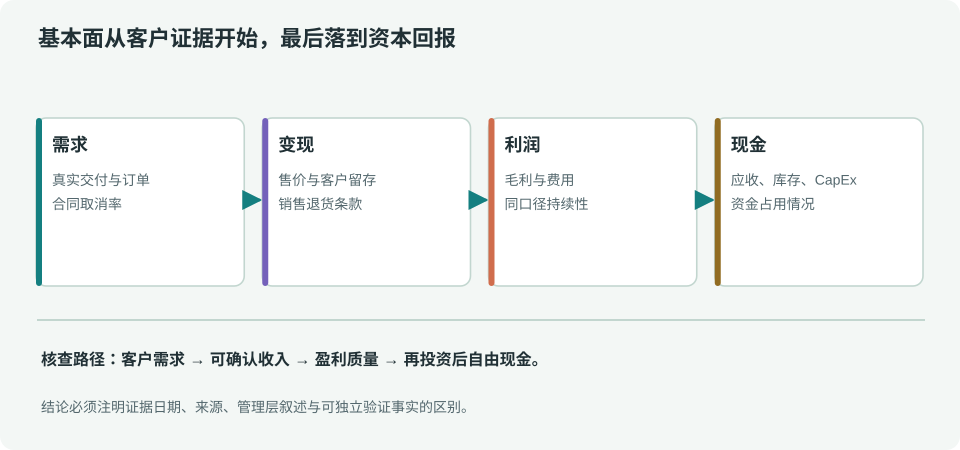
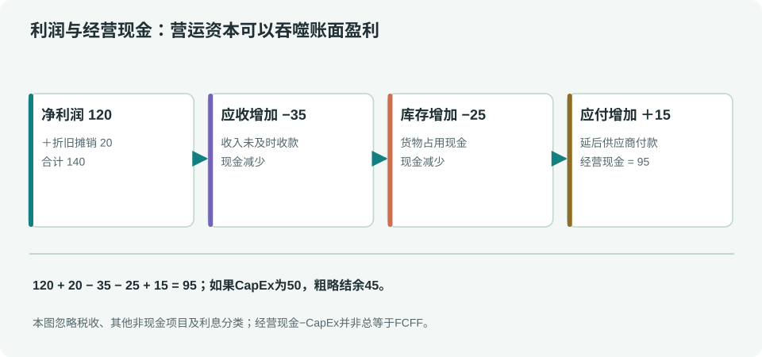
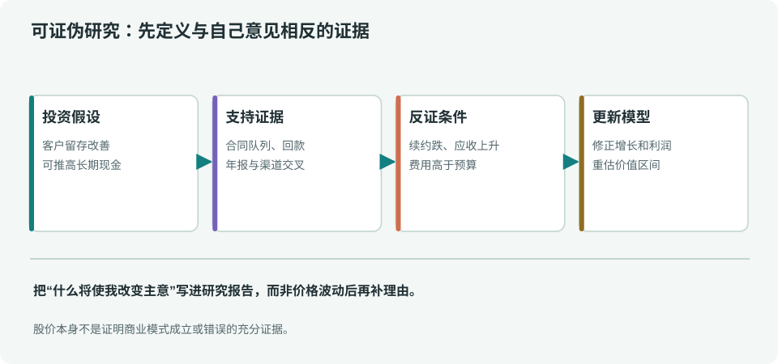

CHAPTER 12 · COMPANY FUNDAMENTALS
基本面研究：从合同到现金流
商业模式是怎样将真实需求转为可持续现金，而不是一组宣称的战略关键词。
利润增长20%，为什么现金流仍可能恶化？
一家公司公布收入增长15%、净利润增长20%，同时应收账款增长45%，存货积压且新产能资本开支居高不下。利润增长和现金流下降可以同时出现。公司研究的任务是连接客户需求、收入确认、真实成本和实际收付，不是罗列利好消息。
从阅读者的角度，一份研究报告至少要回答：谁购买产品、为什么持续购买、公司如何定价、扩张需要多少资本，以及哪些新证据可能推翻结论。

商业模式要写成有可观察量的经济活动
对制造业，可以把销量、单价、直接材料、生产良率、固定成本作为经营驱动；对订阅企业要跟踪付费用户、单客收入、获客成本、续约率、流失、客户生命周期利润。对平台还要分清交易规模（GMV）和按财务口径确认的收入。市场份额变大也不能直接证明公司拥有定价权。
| 研究变量 | 应找的数据 | 可能出现的反证 |
|---|---|---|
| 需求 | 真实交付、有效订单 | 订单取消率升高 |
| 价格 | 每类产品实际成交价格 | 增长来自大幅降价 |
| 竞争优势 | 单位成本、转换成本、留存 | 客户迅速改用替代品 |
| 增长资本 | 新增设备、应收、存货 | 更多收入需更多资金垫付 |
| 股东回报 | ROIC、股权激励与稀释 | 总利润增而每股价值被稀释 |
研究所谓护城河，需要落在可量化的相对成本、客户转移难度、产品差异化、品牌溢价或规模网络效应，不能把“行业龙头”“管理层优秀”等称呼代替竞争优势证明。
单位经济性：规模扩大到底增加多少利润？
构造一种标准产品：售价50元、单位变动成本20元、当期销量1000件、固定成本15000元。每件贡献毛利30元，当期简化利润（50−20）×1000−15000＝15000元。盈亏平衡数量15000÷30＝500件。模型只用于展示成本结构，不包括全部税费、营运资本和必要资本开支。
增加销量如果必须降价或改变产品组合，单价与单位成本不能假设恒定；一旦新增产能触发额外固定成本，原来线性的利润函数就会改变。
净利润与现金：用营运资本解释差异
假设税后净利润120，折旧摊销20，应收账款增加35、库存增加25、应付账款增加15（百万元）。间接法的简化经营现金流为120＋20−35−25＋15＝95百万元。这是经营现金，不是股东自由现金流；如果资本开支50，扣除后粗略剩余45，但实际FCFF还要依照税、利息及净资本投资口径调整。

应收增加可能来自增长，也可能来自放宽客户信用；应付增加可能来自有利的采购条款，也可能来自付款困难。三张报表必须结合附注、坏账、收入确认与后续回款一起读。
核对盈利质量与管理层声明
财务调查至少检查近3至5年经营现金与利润的累计差异、应收账龄、合同资产、关联交易、非经常性损益、资本支出和债务到期结构。分部信息能揭示高速成长业务是否由另一个部门补贴。对不同会计准则、合并范围或财年结束日的公司，比较前必须统一口径。
管理层的业绩指引是一个预测，财报审计意见是另一类证据，合同条款和客户付款记录又是不同证据。没有独立核对时，不应因为公司宣称“AI订单充足”就直接转成下一年的确定现金流。实地调研需遵守信息披露与内幕交易规则，避免收集或使用重大非公开信息。
估值安全边际为什么不能靠单一目标价计算
假设一个估值模型给出每股100元，市场报价90元，按此模型计算折价为10%。若保守情景只有80元，投资者相对保守价值实际支付了更高价格。价值不是精确已知的自然常数，因此“折价10%”不等于获得10%的收益安全保证。
真正有用的风险揭示会同时展示估值区间、资金压力、增长不达预期时的下界、流动性和投资者可以承受的损失。
研究备忘录：把反证条件提前写下来
可证伪研究将“我们相信客户留存提升”改写为“若未来两季净收入留存低于某个可核验阈值、应收天数增加且新增资本回报低于WACC，将降低增长和利润假设，重估价值”。这需要预先写下数据来源、观察时间和更新规则，而不是在股价下跌后才改变论据。

| 命题 | 当前证据 | 未来复审 |
|---|---|---|
| 需求强劲 | 终端订单和续约 | 交付取消和折扣变化 |
| 经营现金质量好 | 应收账龄与经营现金 | 下期回款是否兑现 |
| 管理层资本配置有效 | 新增资本投入与税后利润 | 项目ROIC是否覆盖WACC |
| 估值区间可靠 | 贴现率与利润率的敏感性 | 多因素同时恶化的情景 |
读者检查
- 为什么利润增长20%不保证经营现金增长20%？
- 单价50、成本20、固定费用15000，盈亏平衡销量是多少？
- 管理层指引与经审计财报有什么证据等级差异？
- 为什么估值下界80、现价90时，不能说安全边际一定为正？
参考资料与研究边界
- CFA Institute 2026：Company Analysis
- CFA Institute 2026：Financial Analysis Techniques
- CFA Institute 2026：Financial Reporting Quality
- Investor.gov：How to Read a 10-K
- CFA Institute：Diligence and Reasonable Basis
这些资料说明研究方法；例子不指向真实上市公司。